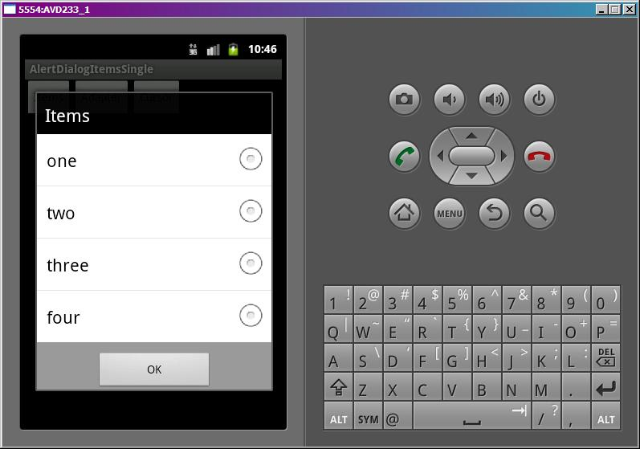
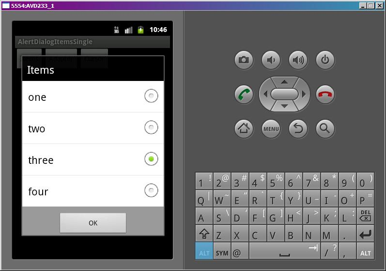

В этом уроке:
- формируем список с одиночным выбором в диалоге
Урок будет аналогичен прошлому, только теперь мы не будем обновлять данные списка диалога.
Мы будем формировать в диалоге список с одиночным выбором и определять какой элемент был выбран (чекнут).
Создадим проект:
Project name: P0631_AlertDialogItemsSingle
Build Target: Android 4.0
Application name: AlertDialogItemsSingle
Package name: ru.startandroid.develop.p0631alertdialogitemssingle
Create Activity: MainActivity
В strings.xml пропишем тексты:
<?xml version="1.0" encoding="utf-8"?>
<resources>
<string name="app_name">AlertDialogItemsSingle</string>
<string name="items">Items</string>
<string name="adapter">Adapter</string>
<string name="cursor">Cursor</string>
<string name="ok">OK</string>
</resources>main.xml, три кнопки:
<?xml version="1.0" encoding="utf-8"?>
<LinearLayout
xmlns:android="http://schemas.android.com/apk/res/android"
android:layout_width="fill_parent"
android:layout_height="fill_parent"
android:orientation="horizontal">
<Button
android:id="@+id/btnItems"
android:layout_width="wrap_content"
android:layout_height="wrap_content"
android:text="@string/items"
android:onClick="onclick">
</Button>
<Button
android:id="@+id/btnAdapter"
android:layout_width="wrap_content"
android:layout_height="wrap_content"
android:text="@string/adapter"
android:onClick="onclick">
</Button>
<Button
android:id="@+id/btnCursor"
android:layout_width="wrap_content"
android:layout_height="wrap_content"
android:text="@string/cursor"
android:onClick="onclick">
</Button>
</LinearLayout>DB.java аналогичен с прошлого урока, только уберем метод изменения записей
package ru.startandroid.develop.p0631alertdialogitemssingle;
import android.content.ContentValues;
import android.content.Context;
import android.database.Cursor;
import android.database.sqlite.SQLiteDatabase;
import android.database.sqlite.SQLiteDatabase.CursorFactory;
import android.database.sqlite.SQLiteOpenHelper;
public class DB {
private static final String DB_NAME = "mydb";
private static final int DB_VERSION = 1;
private static final String DB_TABLE = "mytab";
public static final String COLUMN_ID = "_id";
public static final String COLUMN_TXT = "txt";
private static final String DB_CREATE =
"create table " + DB_TABLE + "(" +
COLUMN_ID + " integer primary key, " +
COLUMN_TXT + " text" +
");";
private final Context mCtx;
private DBHelper mDBHelper;
private SQLiteDatabase mDB;
public DB(Context ctx) {
mCtx = ctx;
}
// открыть подключение
public void open() {
mDBHelper = new DBHelper(mCtx, DB_NAME, null, DB_VERSION);
mDB = mDBHelper.getWritableDatabase();
}
// закрыть подключение
public void close() {
if (mDBHelper!=null) mDBHelper.close();
}
// получить все данные из таблицы DB_TABLE
public Cursor getAllData() {
return mDB.query(DB_TABLE, null, null, null, null, null, null);
}
// класс по созданию и управлению БД
private class DBHelper extends SQLiteOpenHelper {
public DBHelper(Context context, String name, CursorFactory factory,
int version) {
super(context, name, factory, version);
}
// создаем и заполняем БД
@Override
public void onCreate(SQLiteDatabase db) {
db.execSQL(DB_CREATE);
ContentValues cv = new ContentValues();
for (int i = 1; i < 5; i++) {
cv.put(COLUMN_ID, i);
cv.put(COLUMN_TXT, "sometext " + i);
db.insert(DB_TABLE, null, cv);
}
}
@Override
public void onUpgrade(SQLiteDatabase db, int oldVersion, int newVersion) {
}
}
}MainActivity.java немного изменился:
package ru.startandroid.develop.p0631alertdialogitemssingle;
import android.app.Activity;
import android.app.AlertDialog;
import android.app.Dialog;
import android.content.DialogInterface;
import android.content.DialogInterface.OnClickListener;
import android.database.Cursor;
import android.os.Bundle;
import android.util.Log;
import android.view.View;
import android.widget.ArrayAdapter;
import android.widget.ListView;
public class MainActivity extends Activity {
final String LOG_TAG = "myLogs";
final int DIALOG_ITEMS = 1;
final int DIALOG_ADAPTER = 2;
final int DIALOG_CURSOR = 3;
DB db;
Cursor cursor;
String data[] = { "one", "two", "three", "four" };
/** Called when the activity is first created. */
public void onCreate(Bundle savedInstanceState) {
super.onCreate(savedInstanceState);
setContentView(R.layout.main);
// открываем подключение к БД
db = new DB(this);
db.open();
cursor = db.getAllData();
startManagingCursor(cursor);
}
public void onclick(View v) {
switch (v.getId()) {
case R.id.btnItems:
showDialog(DIALOG_ITEMS);
break;
case R.id.btnAdapter:
showDialog(DIALOG_ADAPTER);
break;
case R.id.btnCursor:
showDialog(DIALOG_CURSOR);
break;
default:
break;
}
}
protected Dialog onCreateDialog(int id) {
AlertDialog.Builder adb = new AlertDialog.Builder(this);
switch (id) {
// массив
case DIALOG_ITEMS:
adb.setTitle(R.string.items);
adb.setSingleChoiceItems(data, -1, myClickListener);
break;
// адаптер
case DIALOG_ADAPTER:
adb.setTitle(R.string.adapter);
ArrayAdapter<String> adapter = new ArrayAdapter<String>(this,
android.R.layout.select_dialog_singlechoice, data);
adb.setSingleChoiceItems(adapter, -1, myClickListener);
break;
// курсор
case DIALOG_CURSOR:
adb.setTitle(R.string.cursor);
adb.setSingleChoiceItems(cursor, -1, DB.COLUMN_TXT, myClickListener);
break;
}
adb.setPositiveButton(R.string.ok, myClickListener);
return adb.create();
}
// обработчик нажатия на пункт списка диалога или кнопку
OnClickListener myClickListener = new OnClickListener() {
public void onClick(DialogInterface dialog, int which) {
ListView lv = ((AlertDialog) dialog).getListView();
if (which == Dialog.BUTTON_POSITIVE)
// выводим в лог позицию выбранного элемента
Log.d(LOG_TAG, "pos = " + lv.getCheckedItemPosition());
else
// выводим в лог позицию нажатого элемента
Log.d(LOG_TAG, "which = " + which);
}
};
@Override
protected void onDestroy() {
super.onDestroy();
db.close();
}
}В onCreate подключаемся к базе.
onclick – в зависимости от нажатой кнопки вызываем соответствующий диалог.
onCreateDialog – создаем вызываемый диалог, используя AlertDialog.Builder. Диалог может построить список, используя один из следующих объектов:
1) Массив строк. Используется метод setSingleChoiceItems. На вход подается массив, позиция выбранного элемента и обработчик нажатия. Если мы в значение выбранного элемента передаем -1, то в списке не будет выбранного элемента.
2) Адаптер. Мы создаем ArrayAdapter, используя массив data и стандартный layout select_dialog_singlechoice, и передаем его в метод setSingleChoiceItems. Также передаем туда позицию выбранного элемента и обработчик.
3) Курсор БД. Вызываем метод setSingleChoiceItems. Передаем туда курсор, позицию выбранного элемента, имя поля (значение которого будет показано в списке) и обработчик нажатия.
Кроме списка указываем только заголовок. В конце добавим кнопку ОК, создаем и возвращаем Dialog.
Как видим для всех трех способов создания используются методы с одинаковым названием setSingleChoiceItems, но с разными аргументами на вход.
myClickListener – обработчик нажатия на пункты списка и на кнопку. Если было нажатие на кнопку (а значит - закрытие диалога), то в лог выводим информацию о выбранном элементе. Иначе (нажатие на пункт списка) – выводим позицию нажатого элемента. Если диалог содержит список с одиночным или множественным выбором, то нажатие на пункт списка не приводит к закрытию диалога. Но это можно без проблем реализовать программно.
В onDestroy закрываем подключение к БД.
Все сохраним и запустим. Вызовем какой-нибудь диалог.

Ничего не выбрано, т.к. мы указали -1 в методе setSingleChoiceItems.
Нажмем на пункт, он выделился

А в логе появился текст
which = 2
Если нажмем на ОК, то диалог закроется. А лог отобразит позицию выбранного элемента.
pos = 2
Если теперь снова откроете диалог, то выбранный пункт так и останется выбранным. Т.к. диалог не уничтожается при закрытии. Если хотите перед каждым вызовом менять выбранный элемент, реализуйте метод onPrepareDialog. В нем надо добраться до списка и вызвать метод setItemChecked.
Пример кода, в котором выбирается третий элемент (нумерация с нуля):
protected void onPrepareDialog(int id, Dialog dialog) {
((AlertDialog) dialog).getListView().setItemChecked(2, true);
};